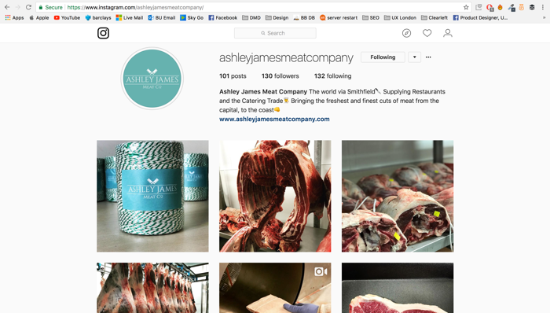
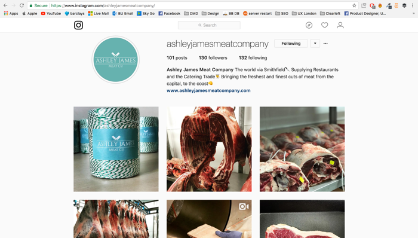

I am a First Class Digital Media Design graduate from Bournemouth University, currently on a 6 month internship with Clearleft, an UX design consultancy based in Brighton, UK. For the past six year, I have been designing digital products, gaining a solid foundation in the principles of visual design and interaction design. I’m a creative thinker who loves solving problems, challenging my creative boundaries, researching and designing products with the user experience at the heart of every project.
Service:
Concept and innovation generation, Design sprint, User research
Brief: Whilst working at Clearleft, a UX design consultancy based in Brighton, UK, I supported and participated in a design sprint for global airline, Virgin Atlantic, with the focus of exploring the question, “How can we create a more ‘Virgin-like’ help centre?” We ran a week-long sprint, in line with the philosophy of Jake Knapp’s The Sprint Book, apportioning our collaborations as follows:
Actions:
Day 1 - Understand:
To understand the business opportunity, the audience and the competition by first defining what it meant to be Virgin-like whilst recognising non Virgin-like behaviours and practices. To achieve this we invited industry experts, including a long-standing Virgin team member, to participate in a set of discussions, sharing their knowledge of working in a Virgin customer service environment. This culminated in the group identifying a manageable piece of the problem that could be solved within the sprint timescale.
The group activities revealed individual customer stories relating to their reason for flying. We therefore concluded that by understanding more about these ‘stories’, Virgin could deliver a more tailored, Virgin-like customer experience. This prompted a further question, “How might Virgin access their customer’s stories?”.
Day 2 - Diverge:
As a group we brainstormed a range of potential concepts for acquiring this information, with ideas ranging from the novel & unique to creative expansions on established practices. Ultimately, by close of play on day 2, the team had collated a range of individual suggestions for achieving the goal.
Day 3 - Converge:
The next stage was to create a gallery style viewing for all the ideas and collectively decide on the one that we wanted to develop through to prototype and test. We went for a form of close network social media, based on enabling Virgin Atlantic passengers travelling on the same flight, to communicate with one another before, during and after their flights. The primary function would be that the customers are able crowdsource information in the most relevant fashion. However, the information can also be used by Virgin to personalise and tailor the individual travelling experiences, making them more ‘Virgin-like’.
For example, offering a customer travelling for their birthday, the opportunity to claim a ‘birthday drink’ at the bar.
Day 4 - Prototype:
Arguably the most intense and challenging day, we created a prototype by focussing on the customer facing aspect of our product. Here we were able to create a realistic facade that enabled us to test whether Virgin customers considered the idea useful and whether, in their opinion, it felt ‘virgin-like’.
Day 5 - Testing:
The final day was about discovery. We tested the prototype with three Virgin Atlantic customers. All had flown longhaul in the last six months and had managed their booking online.We aimed to answer three key questions: Do the participants understand what the service is? What might they might use it for? And Is there an appetite for such a service? Whilst the results of the test were of interest, revealing a viable product and potential answers and solution to the original questions, the true value came from experiencing the process and a greater understanding of how Virgin Atlantic to use the design sprint process to great effect going forward.
Outcomes
We demonstrated the value of treating innovation work separately. By running a design sprint experience and bringing together employees of varied skills and experiences, they were able to identify and provide an informed solution in just a week. Significantly, this was something the business had previously struggled to do. As a result, this helped to establish the value of innovation sprints in the mind of the executive team. Finally, by taking a broad, holistic view on what makes Virgin ‘Virgin-like’, we were able to generate a backlog of ideas and opportunities for the business to explore going forward.
Key Personal Learnings:
- Broad minded thinking spawns creativity
- Diverse roles and perspectives provide the best environment for collaborative thinking
- Personalised stories are the key to delivering a tailored personal experience and improving customer service standards
- No such thing as a bad idea
- All ideas, have the potential to be developed
- The best ideas come from collaboration and iteration
- Something that seems simple can have many elements
- When testing, there is no need to build everything, just a believable facade
Greater London Authority Guerilla Testing
Client:
Greater London Authority
Date:
November 2017
Service:
User research, Guerilla testing
Brief
Whilst working at Clearleft, a UX design consultancy based in Brighton, UK, I worked as part of a team delivering Guerrilla Testing for Greater London Authority (GLA). The objective of the research was to investigate the high level expectations and motivations of the user when interacting with an online campaign page, whilst establishing their comprehension of the content and the impact and clarity of the ‘call to actions’ (CTA). We were additionally tasked with highlighting any general usability issues across a GLA example site and other well-known campaign websites.
High Level questions;
- Is the user clear about the campaign message ?
- Is the campaign ‘call to action’ clear?
- Is the content relevant?
- What does the user do next?
- What makes a compelling campaign?
- Which page attributes help to drive engagement?
- Where are the general usability issues?
Action
For variety we e ran the Guerilla test on a total of six people for each user journey, at various London locations, including City Hall, Bank Station, and The British Library. Users were approached at random and subsequently screened to ensure they lived and/or worked in London. Interview length ranged from 10-20 minutes and were run using either an iPhone or iPad.
Outcome
The outcomes of the Guerrilla tests were delivered and subsequently reviewed by the GLA as part of an internal stakeholder co-design workshop. Some of the research findings we presented to them were as follows;
- Most users were generally confused, not understanding how to proceed or how to get involved.
- Users that viewed the videos were generally receptive to them. However, most people didn’t view them and conseuqnetly failed to understand how to to get involved.
- Participants did not immediately recognise or understand the #BeBoldForChange hero banner image.
- Participants located the social links when prompted but failed to include the #BeBoldForChange hashtag in any of their share messages.
- Participants found the layout cluttered and the typography visual hierarchy confusing.
- Users wanted an easy to ‘consume’, summarised list of details e.g. facts, figures.
- Users generally found no CTA on the page
- Users sought social proof e.g. latest tweets including hashtag, local events.
Ashley James Meat Co. brand & website
Client:
Ashley James
Date:
August 2017
Service:
Branding, Visual design & Responsive web design
Brief
Ashley James Meat Co. (AJMC) is a meat supplier to the catering and restaurant trade based in Sussex. Ashley, the founder and owner, presented me with a blank canvas on which to design and create his entire brand from scratch. This included the website development from concept through to launch and included all design assets. AJMC wanted a crisp modern look and style that reflected his contemporary outlook and set him apart from the archetypal 'meat' brand. In addition, he wanted to retain some classical design elements with a nod to his industry, with the goal of remaining instantly identifiable as a meat supplier.
Action
I began by performing a review of his business offering and market position and used this information as a creative influence throughout the design process. As part of the review we conducted user research that drew on the experience, knowledge and expertise of Ashley himself alongside a number of other industry experts.
Throughout the development process, the user experience was at the heart of every step. In this case, the users are restaurant owners, head chefs, or anyone else responsible for the purchase of meat. Taking into consideration both AJMC’s brief and the desired user experience, we arrived at the creation of a brand image where old meets new. This contrast satisfied all aspects of the brand element of the brief.
Outcome
Working closely with AJMC, we made a conscious effort to create a fresh brand that reflected his innovative and youthful exuberance while complimenting the style with classical elements. This resulted in clean typography bordered with the mint and the small butchers cleavers icon as the crown of the logo. I subsequently created a responsive website that integrated the needs and requirements of the business and its users. They effectively wanted an online business card - contact details, company profile, activities and services with its main purpose being to establish a level of credibility and integrity as a new business.
I was satisfied that we had created a brand that stood out from other meat suppliers.
As part of my Bournemouth University degree course, I designed, developed and built an IOS app for my final year graduate project. Named Boozebible, the app offered the ability to search your chosen geographical area for pubs, bars and clubs based on a variety of search criteria. These included:
- The price of a pint
- Venue drink specialities eg gin
- Whether they had a beer garden
- Sky sports
- Pool table
- Dart table
- Comedy nights
With the project representing a course ‘unit’ it required the compulsory presentation of the following:
- A clear proposal outlining the development and iterative process of the app concept
- Supporting user research from the intended audience
- A responsive website for the app
- The production of a ‘trailer’ or video demonstrating the functioning app
- The design and production of a promotional poster
- The fully functioning app, created for IOS
In addition to all these elements we were giving the amazing opportunity of presenting the apps to a group of industry professionals at the end of year exhibition.
The inspiration behind the app started as a little joke between myself and a few university friends. We found ourselves wanting to try out different pubs and bars in the local area rather than going to the same place over again. As we were visiting so many, it became a bit of a game to try and ‘complete the collection’ (visit them all). To keep track of where we had been; we stored the details on the ‘notes’ app on our phones. After completing a few, we started reviewing them based on the style, ambiance, cost and location.
For this app, the user research was fairly easy to gather. My intended audience was university students, of which I was one at the time. I conducted a focus group with a few of my fellow Bournemouth University students, to ascertain the nature of venue search criteria that would appeal to them. The focus group included both face to face discussions and Whatsapp interviews.
During my internship with Clearleft, an UX design consultancy based in Brighton, UK, I was part of the team responsible for designing the customer experience for the UK’s leading UX design conference; UX London (UXL). Applying an existing brand aesthetic, I was responsible for all touchpoints including the design of the speaker pack, re-design of email templates, improving the user journey newsletter sign up, social media design assets and the interaction at the event itself.
As 2018 marked the 10th anniversary of UX London, we reviewed the user journey interaction touchpoints to better understand the opportunities for improved communications. We identified 7 steps in the adoption ladder that would require redesigned communications. They were, Unaware, Aware, Aligned, Engaged, Customer, Repeat and Refer with each of the steps influencing our approach to the redesign of the assets. By understanding the key stages of the user journey we were then able to focus on presenting the most relevant information for that moment. In addition, I reviewed the user experience for signing up to the mailing list. This involved re-designing each element of the process, creating a more streamlined and effective method of communication.
To be continued...
Salisbury Cathedral: Magna Carta IOS App
Client:
Salisbury Cathedral
Date:
March-June 2015
Service:
(IOS app design & development
Brief: As part of my university degree course, we were set a live brief in collaboration with Salisbury Cathedral and RedBalloon. The task was to collaborate in small groups and create an iOS app for the cathedral’s 800th Anniversary Magna Carta exhibition. The best apps were to be selected and used by Salisbury Cathedral.
Action & Outcome:
The main brief criteria was to develop a unique app idea centered around the Magna Carta. We decided to focus on two of its most significant features. First we had it translated from Latin to English, enabling us to get a full comprehension of its narrative. We then considered the fact that it is written in continuous block of text, bereft of modern grammar and consequently making it difficult to distinguish the clauses. We combined these two features in our app.
The Cathedral supplied us with a high-resolution image of the Magna Carta. We used this as our starting point and placed translucent overlays on top of the image to highlight the individual clauses. The image is zoomable and so the user can explore the finer details of the actual document - something which can’t truly be appreciated when looking at the physical Magna Carta. The overlays, when tapped, bring up a translation of the clause while hiding the other overlays to provide focus to the selected clause. We also added a category filter function, enabling the user to highlight relevant clauses on screen. A decision was made to introduce simplified translation in to the app so the text was more comprehensible and accessible to a wider audience.
Finally, we focussed on producing an iPad (tablet) specific app to make the use of the extra screen space. This enabled greater magnification of the document image, allowing it to really stand out and be appreciated - something which couldn’t be achieved on a smaller device.
The cathedral loved our concept, the execution and most of all the potential user experience. They chose to use our app for their exhibition, and even purchased an iPad as a permanent feature for the Cathedral.
Tom Glanfield is the founder and CEO of LHi Group, an international multi-brand company comprising of three non-competing niche recruitment brands and a specialist job board. As part of my industry placement, Tom asked me to create a personal website for him.
Service:
Branding, Responsive web design & development
Piper Maddox are an energy recruitment company based in London, Munich and New York. Alongside my marketing manager, at Lawrence Harvey Group (now LHI), I was tasked with creating the brand and all marketing collateral. I was luckily enough to be given the responsibility to run with this project which led me to solely creating Piper Maddox's website.
Service:
Branding, Responsive web design & development
Harper Harrison is a specialist Built Environment recruitment consultancy. On my placement year I was tasked with creating the website and alongside my manager the brand for Harper Harrison. I was solely responsible for developing the site and maintaining it for the year that I worked for Lawrence Harvey (Now LHI).
Whilst on my placement year at Lawrence Harvey, I was given the opportunity to solely own the design aspect with the supervision of the Group Marketing Manager.This included incentive posters, business cards and email flyers. Here are some examples of the work that I created for LH.
Mixxa's Online Youtube Channel
Client:
MIXXA
Date:
July 2015
Service:
Video
Paul Martin came to me with an idea of having an online TV series where Paul has a 'mix off' to find out who is the better 'mixologist'. Throughout the online series, I was included in the pre production, production and post production process of this online series.


 
